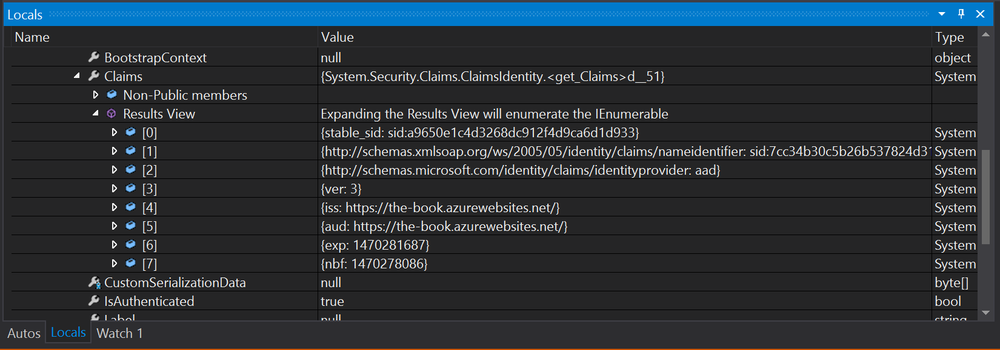
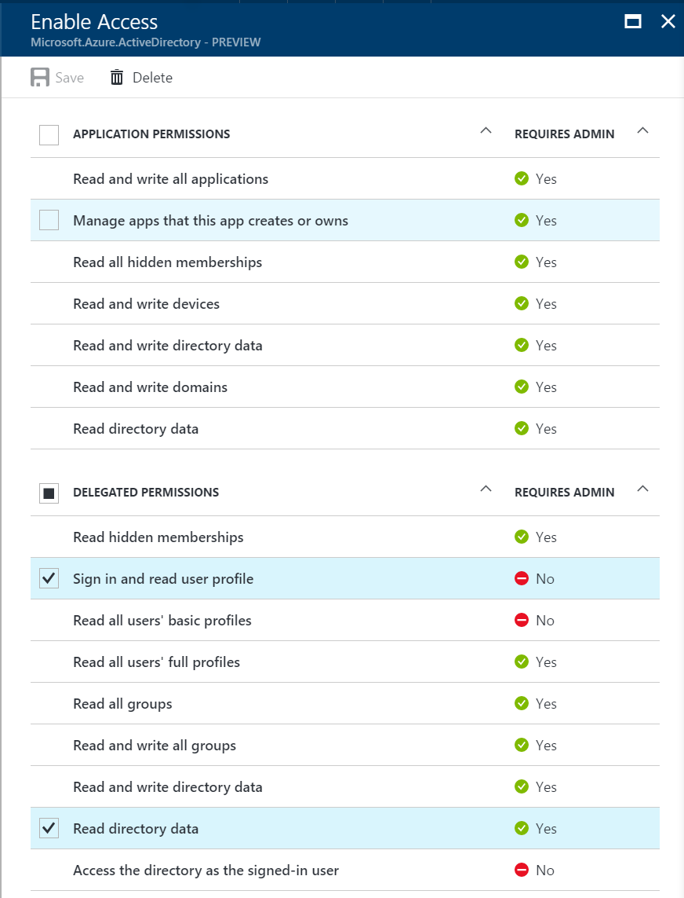

Claims and Authorization¶
Now that we have covered all the techniques for authentication, it's time to look at authorization. While authentication looked at verifying that a user is who they say they are, authorization looks at if a user is allowed to do a specific operation.
Authorization is handled within the server-side project by the [Authorize] attribute. Our Azure Mobile Apps backend
is leveraging this to provide authorization based on whether a user is authenticated or not. The Authorize attribute
can also check to see if a user is in a list of users or roles. However, there is a problem with this. The user id
is not guessable and we have no roles. To see what I mean, run the Backend project locally and set a break point
on the GetAllTodoItems() method in the TodoItemController, then run your server and your UWP application.
Tip
Once you have built and deployed the UWP application, it will appear in your normal Application list. This allows you to run the application and the server at the same time on the same machine.
Once you have authenticated, you will be able to set a break point to take a look at this.User.Identity:

Note that the Name property is null. This is the property that is used when you want to authorize individual users.
Expand the Claims property and then click on Results View:

The only claims are the ones in the token, and none of them match the RoleClaimType, so we can't use roles either.
Clearly, we are going to have to do something else.
Obtaining User Claims¶
At some point you are going to need to deal with something other than the claims that are in the token passed for
authentication. Fortunately, the Authentication / Authorization feature has an endpoint for that at /.auth/me:
Of course, the /.auth/me endpoint is not of any use if you cannot access it. The most use of this information is
gained during authorization on the server and we will cover this use later on. However, there are reasons to pull
this information on the client as well. For example, we may want to make the List View title be our name instead of
"Tasks".
Warn
You can't use the /.auth/me endpoint when using custom authentication.
Since identity provider claims can be anything, they are transferred as a list within a JSON object. Before we can
decode the JSON object, we need to define the models. This is done in the shared TaskList project. I've defined
this in Models\AppServiceIdentity.cs.
using System.Collections.Generic;
using Newtonsoft.Json;
namespace TaskList.Models
{
public class AppServiceIdentity
{
[JsonProperty(PropertyName = "id_token")]
public string IdToken { get; set; }
[JsonProperty(PropertyName = "provider_name")]
public string ProviderName { get; set; }
[JsonProperty(PropertyName = "user_id")]
public string UserId { get; set; }
[JsonProperty(PropertyName = "user_claims")]
public List<UserClaim> UserClaims { get; set; }
}
public class UserClaim
{
[JsonProperty(PropertyName = "typ")]
public string Type { get; set; }
[JsonProperty(PropertyName = "val")]
public string Value { get; set; }
}
}
This matches the JSON format from the /.auth/me call we did earlier. This is going to be a part of the
ICloudService as follows:
using System.Threading.Tasks;
using TaskList.Models;
namespace TaskList.Abstractions
{
public interface ICloudService
{
ICloudTable<T> GetTable<T>() where T : TableData;
Task LoginAsync();
Task LoginAsync(User user);
Task<AppServiceIdentity> GetIdentityAsync();
}
}
Finally, we need to actually implement the concrete version in AzureCloudService.cs:
List<AppServiceIdentity> identities = null;
public async Task<AppServiceIdentity> GetIdentityAsync()
{
if (client.CurrentUser == null || client.CurrentUser?.MobileServiceAuthenticationToken == null)
{
throw new InvalidOperationException("Not Authenticated");
}
if (identities == null)
{
identities = await client.InvokeApiAsync<List<AppServiceIdentity>>("/.auth/me");
}
if (identities.Count > 0)
return identities[0];
return null;
}
Note that there is no reason to instantiate your own HttpClient(). The Azure Mobile Apps SDK has a method for
invoking custom API calls (as we shall see later on). However, if you prefix the path with a slash, it will execute
a HTTP GET for any API with any authentication that is currently in force. We can leverage this to call the
/.auth/me endpoint and decode the response in one line of code. Adjust the ExecuteRefreshCommand() method in
the ViewModels\TaskListViewModel.cs file to take advantage of this:
async Task ExecuteRefreshCommand()
{
if (IsBusy)
return;
IsBusy = true;
try
{
var identity = await cloudService.GetIdentityAsync();
if (identity != null)
{
var name = identity.UserClaims.FirstOrDefault(c => c.Type.Equals("name")).Value;
Title = $"Tasks for {name}";
}
var list = await Table.ReadAllItemsAsync();
Items.ReplaceRange(list);
}
catch (Exception ex)
{
await Application.Current.MainPage.DisplayAlert("Items Not Loaded", ex.Message, "OK");
}
finally
{
IsBusy = false;
}
}
The return value from the GetIdentityAsync() method is the first identity. Normally, a user would only authenticate
once, so this is fairly safe. The number of claims returned depends on the identity provider and could easily number
in the hundreds. Even the default configuration for Azure Active Directory returns 18 claims. These are easily handled
using LINQ, however. The Type property holds the type. This could be a short (common) name. It could also be a
schema name, which looks more like a URI. The only way to know what claims are coming back for sure is to look at
the /.auth/me result with something like Postman.
Warn
If you are using Custom Authentication (e.g. username/password or a third-party token), then the /.auth/me
endpoint is not available to you. You can still produce a custom API in your backend to provide this information to
your client, but you are responsible for the code - it's custom, after all!
Authorization¶
Now that we have covered all the techniques for authentication, it's time to look at authorization. While authentication looked at verifying that a user is who they say they are, authorization looks at if a user is allowed to do a specific operation.
Authorization is handled within the server-side project by the [Authorize] attribute. Our Azure Mobile Apps backend
is leveraging this to provide authorization based on whether a user is authenticated or not. The Authorize attribute
can also check to see if a user is in a list of users or roles. However, there is a problem with this. The user id
is not guessable and we have no roles. To see what I mean, run the Backend project and set a break point on the
GetAllTodoItems() method in the TodoItemController, then run your server and your UWP application.
Tip
Once you have built and deployed the UWP application, it will appear in your normal Application list. This allows you to run the application and the server at the same time on the same machine. Alternatively, you can attach a Debugger to your Azure App Service within Visual Studio's Cloud Explorer.
Once you have authenticated, you will be able to set a break point to take a look at this.User.Identity:
Note that the Name property is null. This is the property that is used when you want to authorize individual users.
Expand the Claims property and then click on Results View:
The only claims are the ones in the token, and none of them match the RoleClaimType, so we can't use roles either.
Clearly, we are going to have to do something else. Fortunately, we already know that we can get some information
about the identity provider claims from the /.auth/me endpoint. To get the extra information, we need to query
the User object:
var identity = await User.GetAppServiceIdentityAsync<AzureActiveDirectoryCredentials>(Request);
There is one Credentials class for each supported authentication technique - Azure Active Directory, Facebook,
Google, Microsoft Account and Twitter. These are in the Microsoft.Azure.Mobile.Server.Authentication namespace.
They all follow the same pattern as the model we created for the client - there are Provider, UserId and UserClaims
properties. The token and any special information will be automatically decoded for you. For instance, the TenantId
is pulled out of the response for Azure AD.
Tip
You can use the AccessToken property to do Graph API lookups for most providers in a custom API. We'll get into this more in a later chapter.
Adding Group Claims to the Request¶
There are times when you want to add something else to the token that is returned from Azure AD. The most common requirement is to add group information to the response so you can handle group-based authorization.
To add security groups to the Azure AD token:
- Log into the Classic Portal.
- Click on your directory (probably called Default Directory) in the All Items list.
- Click on APPLICATIONS, then your WEB application.
- Click on MANAGE MANIFEST (at the bottom of the page), then Download Manifest.
- Click on Download manifest.
This will download a JSON file. Edit the file with a text editor. (I use Visual Studio Code). At the top of the file is this:
"displayName": "webapp-for-the-book",
"errorUrl": null,
"groupMembershipClaims": null,
"homepage": "https://the-book.azurewebsites.net",
"identifierUris": [
"https://the-book.azurewebsites.net"
],
"keyCredentials": [],
"knownClientApplications": [],
Change the groupMembershipClaims to "SecurityGroup":
"displayName": "webapp-for-the-book",
"errorUrl": null,
"groupMembershipClaims": "SecurityGroup",
"homepage": "https://the-book.azurewebsites.net",
"identifierUris": [
"https://the-book.azurewebsites.net"
],
"keyCredentials": [],
"knownClientApplications": [],
Save the file. You can now upload this again. Go back to the WEB application, click on MANAGE MANIFEST, then click on Upload Manifest. Select the file and click on the tick.

You can now give the web application additional permissions:
- Click on the CONFIGURE tab.
- Scroll to the bottom, click on Delegated Permissions.
- Check the box for Read directory data.

- Click on Save.
Now that you have configured the application to return groups as part of the claims, you should probably add a couple of groups:
- Click on the back-arrow (at the top left) to return to the top level of your directory.
- Click on GROUPS.
- Click on ADD GROUP.
- Fill in the information, select Security as the group type, then click on the tick.

- Click on the new group, then click on PROPERTIES.

- Make a note of the OBJECT ID. The claims for groups are listed by the Object ID, so you will need this to refer to the group later.
It's a good idea to add a couple of groups for testing purposes. If you are using the organization directory, you
will need to request the creation of a couple of groups for application roles. The view of the groups will be shown
when we get the identity of the user using User.GetAppServiceIdentityAsync<AzureActiveDirectoryCredentials>(Request):

Group Authorization¶
Now that we have group claims in the claims list for the /.auth/me endpoint, we can move forward to do authorization
based on these claims. This can be done in a relatively basic manner by implementing a method to check the claims:
async Task<bool> IsAuthorizedAsync()
{
var identity = await User.GetAppServiceIdentityAsync<AzureActiveDirectoryCredentials>(Request);
var countofGroups = identity.UserClaims
.Where(c => c.Type.Equals("groups") && c.Value.Equals("01f214a9-af1f-4bdd-938f-3f16749aef0e"))
.Count();
return (countofGroups > 0);
}
The UserClaims object is an IEnumerable that contains objects with a Type and a Value. The Type for the group
claims is groups. Once we have this knowledge, we can use a LINQ query to obtain a count of the claims that match
the conditions we want to test. The Value we use is the Object ID of the group. This is available in the
PROPERTIES tab of the group.
We can prevent a new record being added by adjusting the PostTodoItem() method:
public async Task<IHttpActionResult> PostTodoItem(TodoItem item)
{
if (!await IsAuthorizedAsync())
{
return Unauthorized();
}
TodoItem current = await InsertAsync(item);
return CreatedAtRoute("Tables", new { id = current.Id }, current);
}
Unfortunately, most of the table controller methods do not return an IHttpActionResult, so this has limited value.
What would be better would be an [Authorize] attribute that tests the claims for us. For instance, we should be
able to do the following:
[AuthorizeClaims("groups", "01f214a9-af1f-4bdd-938f-3f16749aef0e")]
public async Task<IHttpActionResult> PostTodoItem(TodoItem item)
{
TodoItem current = await InsertAsync(item);
return CreatedAtRoute("Tables", new { id = current.Id }, current);
}
The [AuthorizeClaims()] attribute does not exist, so we have to provide it ourselves:
using System.Linq;
using System.Net;
using System.Security.Principal;
using System.Threading;
using System.Threading.Tasks;
using System.Web.Http;
using System.Web.Http.Controllers;
using System.Web.Http.Filters;
using Microsoft.Azure.Mobile.Server.Authentication;
namespace Backend.Helpers
{
public class AuthorizeClaimsAttribute : AuthorizationFilterAttribute
{
string Type { get; }
string Value { get; }
public AuthorizeClaimsAttribute(string type, string value)
{
Type = type;
Value = value;
}
public override async Task OnAuthorizationAsync(HttpActionContext actionContext, CancellationToken cancellationToken)
{
var request = actionContext.Request;
var user = actionContext.RequestContext.Principal;
if (user != null)
{
var identity = await user.GetAppServiceIdentityAsync<AzureActiveDirectoryCredentials>(request);
var countOfMatchingClaims = identity.UserClaims
.Where(c => c.Type.Equals(Type) && c.Value.Equals(Value))
.Count();
if (countOfMatchingClaims > 0) return;
}
throw new HttpResponseException(HttpStatusCode.Unauthorized);
}
}
}
This is the same type of authorization filter attribute that the officially provided AuthorizeAttribute is based
on. However, the AuthorizeAttribute is synchronous. We require an asynchronous version of the attribute, so we
cannot use a sub-class of the AuthorizeAttribute. Aside from that note, this uses virtually the same code that we
used in the IsAythorizedAsync() method we developped earlier.
We can now use this attribute for testing any claim. For example, our claims has the identity provider as a claim. We can use the following:
[AuthorizeClaims("http://schemas.microsoft.com/identity/claims/identityprovider", "live.com")]
Tip
If you want to test other claims that are not provided, you can enable the Read Directory Data permission in the Azure Active Directory permissions and do a query against the Azure Active Directory. You should think about caching results or minting a new ZUMO token (just like we did in the custom authentication case) for performance reasons.